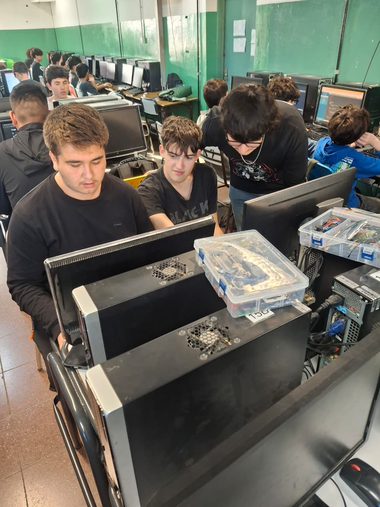

colFi.
Proyecto Col-fi
Información
Este proyecto busca demostrar un sistema básico de comunicación Col-Fi (Color Fidelity) utilizando dos placas Arduino.
La transmisión de datos se realiza mediante la modulación de la luz de un LED, mientras que la recepción se lleva a cabo con un fototransistor.
Este proyecto a pequeña escala pretende servir como ejemplo y referencia a posibles avances con respecto a esta tecnología.



Quiénes somos
Proyecto desarrollado por estudiantes de la E. T. "Ing. Eduardo Latzina" Nro 35
Lucas Marin -
Yago Sayas -
Ciro Lopez -
Thiago Grillo -
Thiago Puga
Documentacion y códigos
Hemos escrito varios documentos teóricos, técnicos y prácticos donde explicamos conceptos,
los argumentamos y por sobre todas las cosas
los ponemos a disposición de su revisión y estudio. Todo el material se encuentra publicado en nuestro repositorio oficial de GitHub y Drive